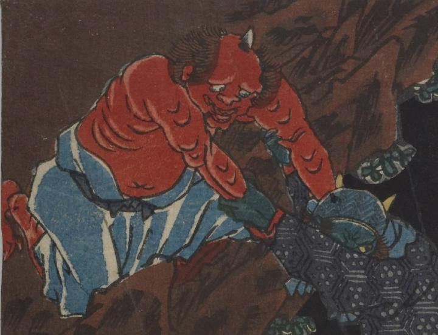

鬼；オニ，一角；イッカク

赤い肌の鬼。頭頂部が禿げ、角が1本生えている。別の鬼を助け出そうとしているようにみえる。
著作者：一栄斎芳艶（歌川芳艶）／出典：親書誌：U426_nichibunken_0084：大江山酒呑退治；オオエヤマシュテンタイジ／日付：2006／資源識別子：U426_nichibunken_0084_0002_0000
Copyright (c)2010- International Research Center for Japanese Studies, Kyoto, Japan. All rights reserved.